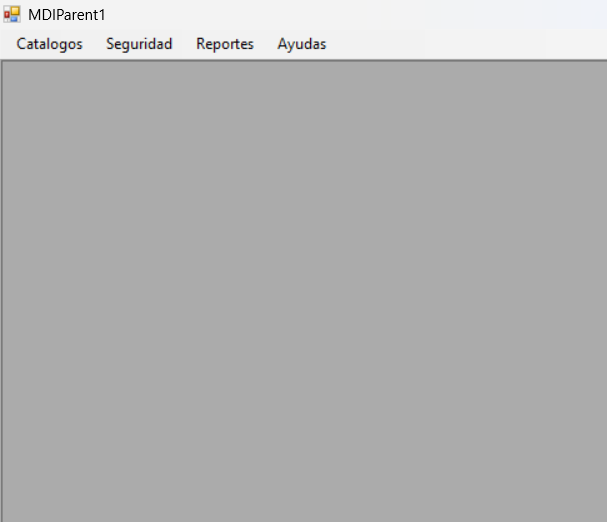

En el MDI encontramos las opciones principales con las que cuenta el sistema. Cada opción permitirá realizar una serie de actividades las cuales tienen como objetivo hacer que el sistema sea fácil de utilizar.
En la opción de Catalogos encontraremos los CRUD principales, a partir de ahí podemos acceder a los Crud del sistema
La opción de Seguridad es en donde encontraremos la bitacora y todo el registro de acciones qué se han realizado dentro programa, brindandonos la información necesaria de aquellos quienes han ejercido cambios en el sistema.
Es el lugar en donde encontraremos los reportes de cada uno de los Mantenimientos, ayudandonos a visualizar, presentar y gestionar la información para ser guardada, compartidda o impresa.
En el apartado de Ayuda, se encontrarán todos los archivos necesarios para dar una capacitación y explicación adecuada al momento de realizar cualquier mantenimiento o proceso.